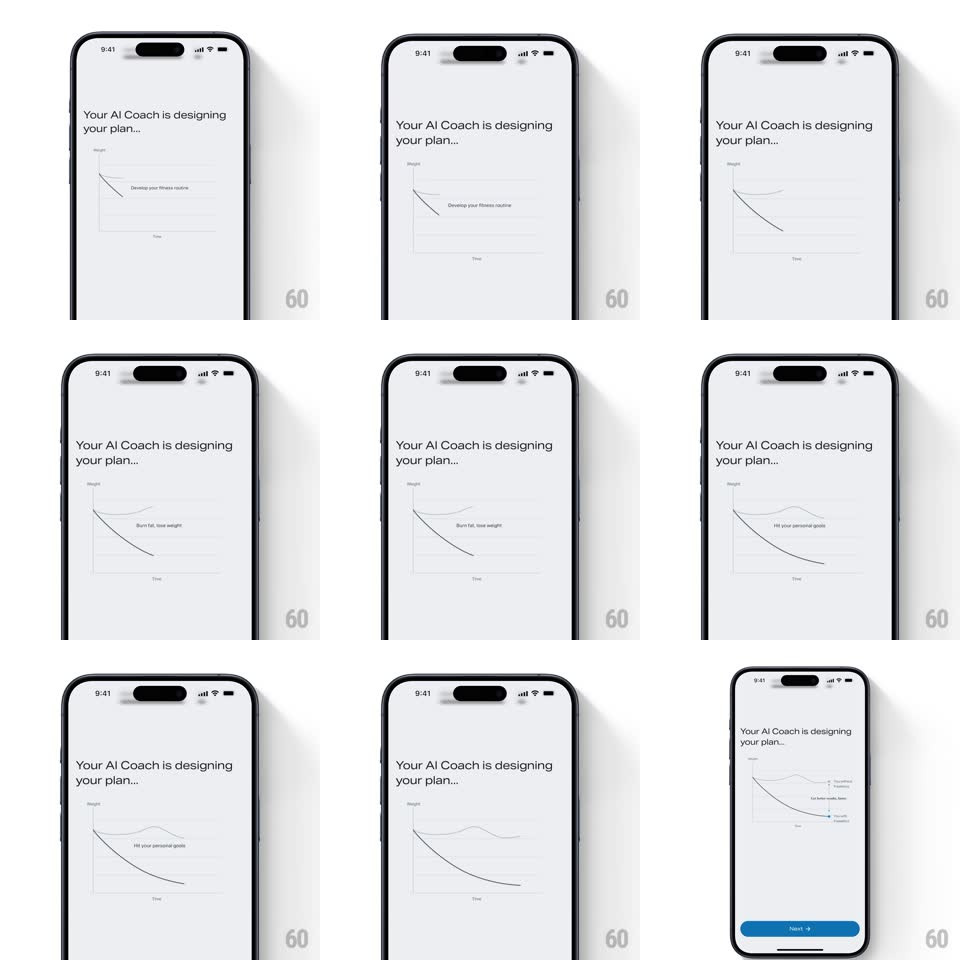

Media
Frame-by-frame

Rebuild this interaction 1:1: Freeletics' AI onboarding graph - "Your AI Coach is designing your plan..." while a weight-over-time chart draws itself line by line, each milestone label fading in as its line completes, ending on a Next button.

Rebuild this interaction 1:1: Freeletics' AI onboarding graph - "Your AI Coach is designing your plan..." while a weight-over-time chart draws itself line by line, each milestone label fading in as its line completes, ending on a Next button. ## Integration Integration: stack-agnostic spec - springs given as stiffness/damping, timed motions as duration + curve; map every value to your framework and animation library of choice. ## Scene White screen: left-aligned headline "Your AI Coach is designing your plan...", a large minimal line chart (Weight vs Time axes, thin gray grid), labels like "Develop your fitness routine", "Burn fat, tone weight", "Hit your personal goals" along the lines, a blue Next button rising at the end. ## Motion spec Pattern: sequential self-drawing chart. - Axes draw first (400ms, stroke-on, origin to edges), then the headline fades up. - Line 1 (the main declining weight curve) draws left-to-right over ~1.4s with an ease-in-out stroke reveal; its label fades in as the stroke passes beneath it. - Lines 2 and 3 follow (each ~1.1s, 300ms apart), slightly different curves, each label fading with its stroke; earlier lines dim to ~50% as the newest draws so the eye follows the active pen. - End state: small end-dot markers pop on each line terminus (scale 0 -> 1, spring ~380/18), the full label set is lit, and Next slides up (300ms, ease-out). ## Calibration - One active line at a time - sequential drawing is the "AI thinking" theater. - Hairline strokes (1.5px), no fills; the chart stays airy. ## Reduced motion Chart fades in fully drawn; labels appear together. ## Don't miss - The stroke reveal follows the curve's actual path (trim-path style), not a horizontal mask. - Ellipsis in the headline animates (three dots cycling, 900ms) while drawing.